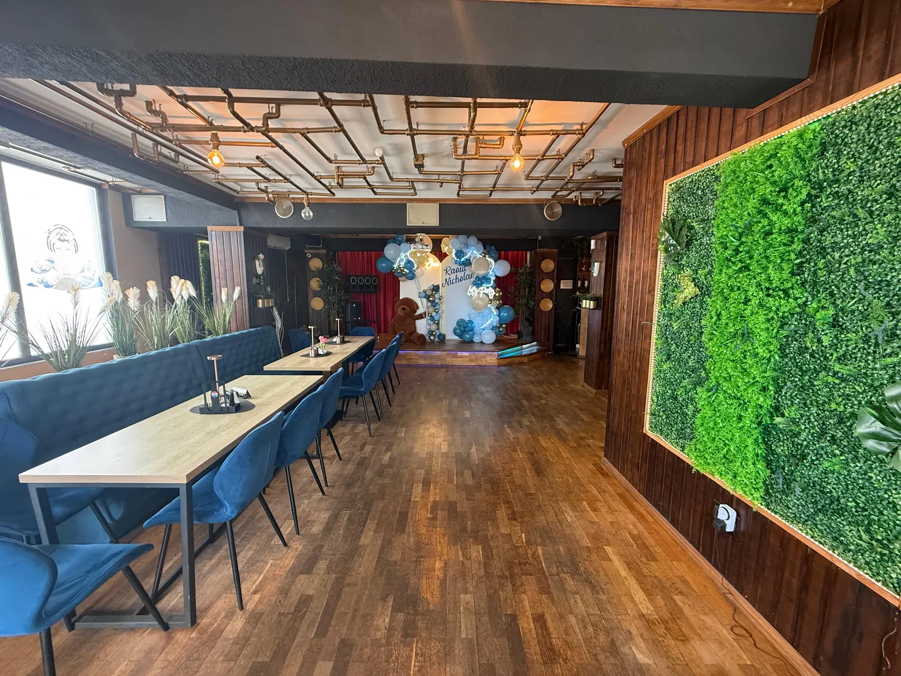
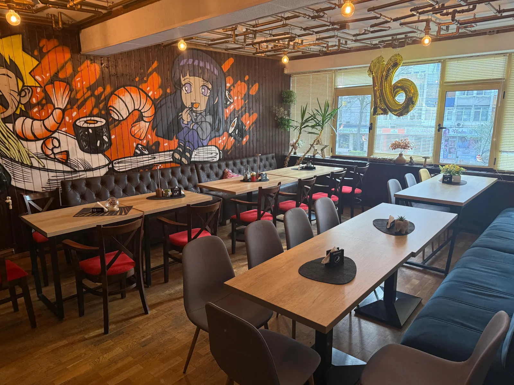

Cauți un loc în Galați pentru majorat, aniversare sau o petrecere doar cu prietenii? La Wok and Noodles ai o sală separată, cu scenă, sistem de lumini, bar complet și un meniu asiatic pe care invitații tăi nu îl găsesc la orice restaurant. Mai jos găsești tot ce trebuie să știi înainte să rezervi.

Ce petreceri organizăm
Wok and Noodles nu e doar locul unde vii la un bol de tăiței. Avem o sală separată, cu scenă, sistem de lumini și bar, gândită pentru momentele în care vrei să fii doar cu oamenii tăi. În Galați organizăm:
- Majorate — petreceri de 18 ani cu decor, muzică și meniu pe gustul generației care a crescut cu sushi și ramen. Avem și un ghid complet de organizare a majoratului în Galați.
- Aniversări — de la 20 la 60 de ani, cu grupuri mici sau mai mari.
- Petreceri private — burlaci, burlăcițe, reuniuni de liceu, petreceri între prieteni.
- Evenimente corporate — team building, cină de firmă, petrecere de Crăciun sau de final de proiect.
- Mese festive în familie — botezuri, logodne, aniversări de căsătorie.
Ce primești la noi
| Ce ai nevoie | Ce găsești la Wok and Noodles |
|---|---|
| Spațiu doar pentru voi | Sală de evenimente separată de restaurant |
| Scenă | Scenă pentru DJ, trupă, discursuri sau momentul cu tortul |
| Atmosferă | Sistem de lumini și un decor asiatic modern, colorat — arată bine în poze |
| Băuturi | Bar complet: cocktailuri, bere, vin, șampanie, sucuri și limonade |
| Mâncare | Meniu personalizat din bucătăria noastră asiatică — platouri, wok, specialități, deserturi |
| Locație ușor de găsit | Strada Regimentul 11 Siret 50A, în centrul Galațiului, vizavi de Palatul de Justiție |

Meniul pentru invitați
Meniul se stabilește împreună cu tine, în funcție de numărul de invitați, buget și gusturi. Ca să îți faci o idee, iată preparatele care merg cel mai bine la o petrecere, cu prețurile din meniul nostru actual:
Platourile sunt gândite pentru împărțit, așa că merg perfect pe masă, la mijloc. Pentru invitații care nu mănâncă pește sau carne avem variante vegetariene — vezi ghidul nostru vegetarian și fără gluten. Pentru alergii, anunță-ne din timp și adaptăm preparatele.
💡 Prețul final depinde de meniul ales, de numărul de invitați și de băuturi. Sună-ne și îți facem o ofertă concretă pentru evenimentul tău — fără obligații.
Cum rezervi, pas cu pas
Ne suni sau ne scrii pe WhatsApp
La 0770 803 320. Spune-ne data, tipul petrecerii și cam câți invitați ai.
Verificăm disponibilitatea sălii
Recomandăm rezervarea cu cel puțin 2 săptămâni înainte. Vinerea și sâmbăta se ocupă primele, mai ales în sezonul majoratelor și în decembrie.
Stabilim meniul și detaliile
Alegem împreună preparatele, băuturile, ora de început și ce ai nevoie pe scenă (DJ, trupă, proiecție).
Vii și te distrezi
Noi ne ocupăm de mâncare, băuturi și servire. Tu te ocupi doar de invitați.
De ce un local asiatic pentru petrecere?
Majoritatea sălilor din Galați oferă același meniu de nuntă: aperitiv rece, sarmale, friptură. E bun, dar e previzibil. Un meniu asiatic schimbă atmosfera: platourile de sushi arată spectaculos pe masă, invitații gustă lucruri noi, iar conversația pornește singură.
În plus, bucătăria asiatică se împarte ușor: platourile de la mijloc, tăițeii, pachețelele și aripioarele crocante merg la un grup de prieteni mai bine decât porțiile clasice. Și pentru că avem livrare zilnică prin Glovo și Wolt, bucătăria noastră e obișnuită cu volume mari și ritm rapid.
Dar nu te baza doar pe ce spunem noi: restaurantul are peste 580 de recenzii pe Google, cu nota 4,5. Clienții pomenesc des atmosfera colorată, porțiile generoase și personalul.
Întrebări frecvente
Cât costă o petrecere privată la Wok and Noodles?
Prețul depinde de meniul ales, de numărul de invitați și de băuturi. Ca reper, platourile de sushi pornesc de la 75 lei, iar tăițeii la wok de la 26 lei porția. Sună la 0770 803 320 și primești o ofertă concretă pentru evenimentul tău.
Cu cât timp înainte trebuie să rezerv sala?
Recomandăm cel puțin 2 săptămâni înainte. Pentru vineri și sâmbătă, mai ales în decembrie și în perioada majoratelor, e bine să suni cât mai devreme.
Pot aduce DJ sau trupă proprie?
Sala are scenă și sistem de lumini, deci poți aduce DJ sau trupă. Stabilim detaliile tehnice la rezervare.
Aveți meniu pentru invitații vegetarieni sau cu alergii?
Da. Avem preparate vegetariene (tăiței la wok doar cu legume, Veggi Roll, salată caldă asiatică), iar pentru alergii adaptăm preparatele dacă ne anunți din timp.
Unde se află sala de evenimente?
Pe Strada Regimentul 11 Siret 50A, în centrul Galațiului, vizavi de Palatul de Justiție.
Se servește alcool invitaților sub 18 ani?
Nu. Conform legii, nu servim băuturi alcoolice persoanelor sub 18 ani, inclusiv la petrecerile private. Pentru ei avem limonade, sucuri, ceaiuri și frappe.